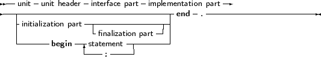
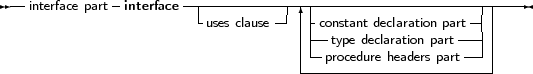

A unit contains a set of declarations, procedures and functions that can be used by a program or another unit. The syntax for a unit is as follows:
_________________________________________________________________________________________________________Units


___________________________________________________________________
The interface part declares all identifiers that must be exported from the unit. This can be constant, type or variable identifiers, and also procedure or function identifier declarations. Declarations inside the implementation part are not accessible outside the unit. The implementation must contain a function declaration for each function or procedure that is declared in the interface part. If a function is declared in the interface part, but no declaration of that function is present in the implementation part, then the compiler will give an error.
When a program uses a unit (say unitA) and this units uses a second unit, say unitB, then the program depends indirectly also on unitB. This means that the compiler must have access to unitB when trying to compile the program. If the unit is not present at compile time, an error occurs.
Note that the identifiers from a unit on which a program depends indirectly, are not accessible to the program. To have access to the identifiers of a unit, the unit must be in the uses clause of the program or unit where the identifiers are needed.
Units can be mutually dependent, that is, they can reference each other in their uses clauses. This is allowed, on the condition that at least one of the references is in the implementation section of the unit. This also holds for indirect mutually dependent units.
If it is possible to start from one interface uses clause of a unit, and to return there via uses clauses of interfaces only, then there is circular unit dependence, and the compiler will generate an error. For example, the following is not allowed:
Unit UnitA;
interface Uses UnitB; implementation end. Unit UnitB interface Uses UnitA; implementation end. |
But this is allowed :
Unit UnitA;
interface Uses UnitB; implementation end. Unit UnitB implementation Uses UnitA; end. |
Because UnitB uses UnitA only in its implentation section.
In general, it is a bad idea to have unit interdependencies, even if it is only in implementation sections.